Software Design
Contents
- Introduction
- Software abstraction & modeling
- Software development process
- Requirements engineering with UML
- Structure modeling with UML
Introduction
We are only evaluated on weeks 1-6.
Lectures are not definitive, study the books (links on canvas).
Grading: project is 70%, exam is 30% (!)
project goal: develop a ROBOSEARCH system with various UML-based techniques. implement a simple demonstrator via a robotic 3D simulator.
Software abstraction & modeling
software engineering: the application of engineering to software. a programmer writes a complete program, a software engineer creates a component.
engineers abstract away from details that can be safely ignored.
model: simplified/partial representation of reality, defined to accomplish a task or reach an agreement
abstraction: generalizing – setting aside specific and individual features
software design: creating models representing an abstract view of the system
Models
what is a model?
- mapping feature: a model is based on an original
- reduction feature: a model only reflects a relevant selection of the original's properties
- pragmatic feature: a model needs to be usable in place of an original with respect to some purpose
consumer and intent influence the abstraction level of a model
descriptive models:
- a subject is described by the model
- sketches and throw-away models – short life time, used to better understand the reality
- models of ideas and vision about the system to be developed – to exploit model for having feedback before actually implementing the system
- models extracted from a running system or code – e.g. to visualize all calls between Java classes
prescriptive models:
- a model prescribes the subject
- the subject does not yet exist
- the models guide the development of the system
- most common consumers are code generators
- often used for development, so their importance may decay when the system is implemented
Software development process
main activities:
-
requirements engineering
- specifies the main functionalities of the system
- defines the qualities to be met
-
design
- give shape to a system via models
- not a clear-cut sequential process
-
implementation and testing
- involves actual development of the system
- component testing – test individual components independently
- system testing – test the system as a whole (including emergent properties like overall performance)
- acceptance testing – test with customer data to see if the system meets the customer's needs
-
evolution
- software is inherently flexible and can change
Waterfall development process
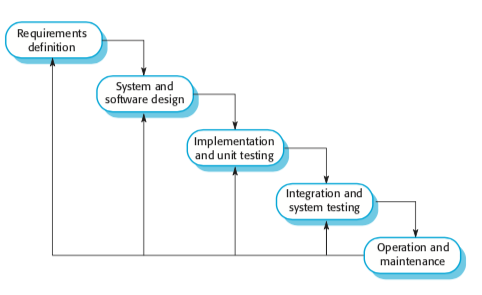
exists in many variants, all with sequential flow. it's document-driven.
issues: poor agility (when do you know how far you are in the project?), poor quality (cuts if you run out of time), high risk (finding issues in test phase)
critical evaluation:
-
positive:
- precise planning and management – standard-oriented
- postpone implementation to after understanding objectives
- good documentation
-
negative:
- hard to get all requirements once and for all (users might not even know what they want)
- rigid
- no feedback from the customer
- no parallelism, all phases are blocking (because sequential)
- a single delivery date at the end
Agile development process
iterative development processes with:
- frequent releases of the product
- continuous interaction between dev team and customer
- reduced product documentation
- continuous and systematic assessment of produced value and risks
agile in practice:
- make a list
- estimate
- set priorities
- start executing
- update the plan at run time
critical evaluation:
-
positive:
- acceptance of change – less risky
- frequent and short iterations
- emphasis on working code
- associates a test with every piece of functionality
- continuous integration and delivery
-
negative:
- feature-based development & ignorance of dependencies
- no strong quality plan
- less focus on architecture of system (in fact, dismisses everything that isn't shippable)
Requirements engineering with UML
What is UML?
A unified modeling language, the defacto standard for software design.
pros:
- not tied to a development process
- can be used across the whole life cycle
- general purpose, can model all sorts of shit
- has different representations (graphical, but also text)
main characteristics:
- comprehensive: can describe all parts of a system
- scalable: "zoom in" and add more details if you want
- originally intended for descriptive models
- now also supports prescriptive models
formal modeling language — its core concepts have a well-defined meaning
UML model is represented graphically with diagrams
The different types:
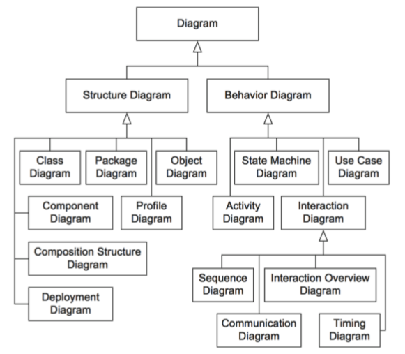
The ones we will use:
- use case diagram: to specify the basic functionality of a software system (requirements)
- class diagram: to define data structures within the system
- state machine diagram: to define intra-object behavior
- sequence diagram: to specify inter-object behavior and communication
a UML model contains everything related to the system. a diagram is just a "window" on the model (shows some parts, but not necessarily everything).
Requirements engineering
the process of establishing:
- features that a system should and will have
- constraints under which it operates and is developed
requirement can range between:
- high-level abstract statement of a feature
- detailed mathematical functional specification
functional (what) vs non-functional (how) requirements
-
functional: services the system should provide, how it should react to inputs, how it should behave in specific situations, opt. what it shouldn't do.
- precise — ambiguous requirements may be interpreted in different ways by developers and users
- complete — they should include descriptions of all facilities required
- consistent — there should be no conflicts or contradictions in descriptions of system facilities
- verifiable — requirements should be directly mapped to parts of system
-
non-functional: constraints on services/functions offered by the system, often apply to system as a whole instead of individual features/services
- system properties and constraints (e.g. reliability, response time, storage requirements)
- may be more critical than functional, like safety requirements
- may affect overall architecture of a system instead of individual components (like organization to minimize communications between robots)
- different types:
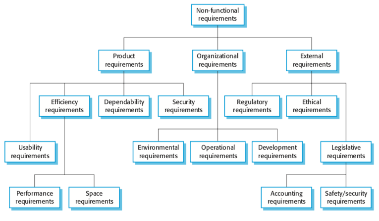
in UML: use case diagrams for functional requirements.
How to write requirements specifications:
| Notation | Description |
|---|---|
| Natural language | Use numbered sentences in natural language. Each sentence is one requirement. |
| Structured natural language. | Requirements are written in natural language on standard form/template. Each field gives info about an aspect of the requirement. |
| Design description languages | Use language like programming language, but with more abstract features specifying requirements by defining an operational model of the system. |
| Graphical notations | Graphical models with text annotations. e.g. UML use case and sequence diagrams. |
| Mathematical specifications | Based on math concepts like finite-state machines or sets. Most customers don't understand this so not often used. |
Natural language specification
requirements are written as natural language sentences. used because it's expressive, intuitive, universal, easily understood by customers.
guidelines:
- invent a standard format, use it for all requirements.
- use language in a consistent way ("shall" for mandatory requirements, "should" for desirable requirements)
- highlight text to identify important parts of requirement
- avoid use of computer jargon
- include explanation (rationale) of why a requirement is needed
Use case diagrams
express expectations of customers/stakeholders.
answers questions:
- what is being described? (the system)
- who interacts with the system? (the actors)
- what can the actors do? (use cases)
use case:
- describes functionality expected from system under development
- set of all use cases describes functionality that a system shall provide.
- notations:
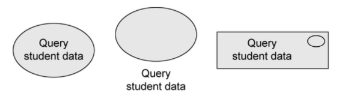
actors:
- interact with the system by using use cases, or by being used by use cases.
- represent roles that users adopt (users can have multiple roles)
- not part of the system, so outside of system boundaries.
- human or non-human
-
primary/secondary:
- if primary, has main benefit of execution of use case.
- if secondary, receives no direct benefit.
-
active or passive
- active: initiates execution of the use case
- passive: provides functionality for the execution of the use case
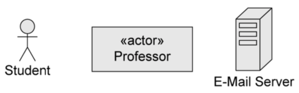
relationships between use cases and actors:
- actors are connected with use cases via associations (solid lines)
- every actors has to communicate with at least one use case
- association is always binary, multiplicities can be specified
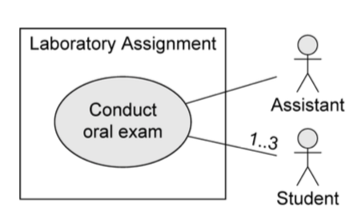
relationships between use cases:
-
«include»
- behavior of one use case ('included') is always integrated in the behavior of another use case ('base')
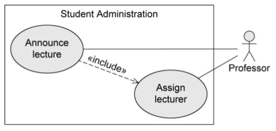
-
«extend»
- behavior of one use case ('extending') may be integrated in behavior of another use case ('base')
- both use cases can also be executed independently of each other
- extension points are written directly in the use case. you can specify multiple extension points.
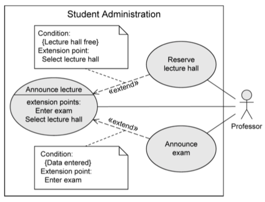
-
generalization of use cases
- if use case A generalizes use case B, then B inherits behavior of A and may extend/overwrite it. B also inherits all relationships form A.
- A may be labeled {abstract} — cannot be executed directly, only B is executable
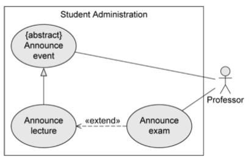
relationships between actors
-
generalization
- actor A inherits from actor B. e.g. A can communicate with X and Y, B can only communicate with Y.
- abstract actors are possible
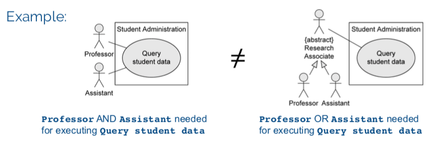
Description of use cases:
- Name
- Short description
- Precondition: prerequisite for successful execution
- Postcondition: system state after successful execution
- Error situations: errors relevant to problem domain
- System state on occurrence of an error
- Actors that communicate with the use case
- Trigger: events which initiate the use case
- Standard process: individual steps to be taken
- Alternative processes: deviations from the standard process
Remember, it's an abstraction. Many small use cases with the same objective should be grouped. Don't decompose functionality into use cases.
Summary of notation
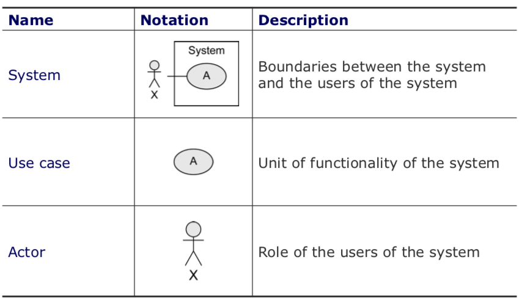
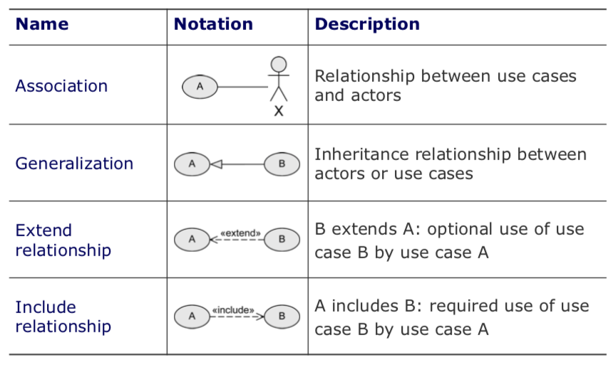
Structure modeling with UML
Class
a construction plan for a set of similar objects of a system
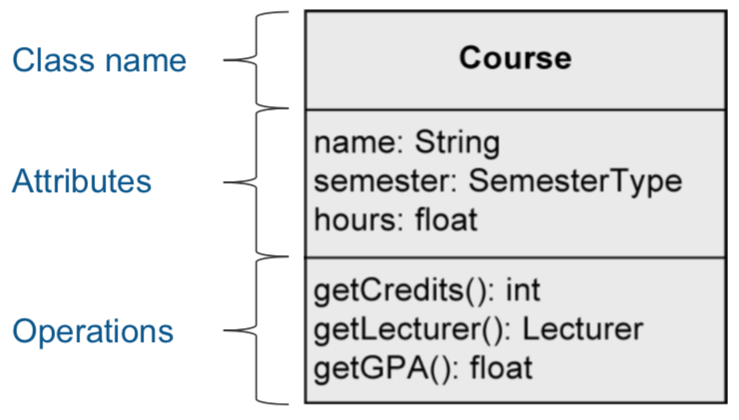
Attribute syntax
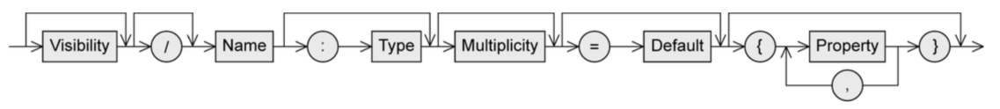
Visibility: who is permitted to access the attribute
-
+public, everybody -
-private, only the object itself -
#protected, class itself and subclasses -
~package, classes that are in the same package
/ means that attribute value is derived from other attributes
Type:
-
primitive data type
- pre-defined: Boolean, Integer, UnlimitedNatural, String
- User-defined: «primitive»
- composite: «datatype»
- enumerations: «enumeration»
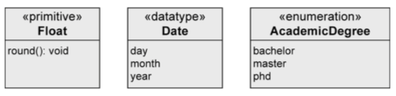
Multiplicity: number of values an attribute may contain (as [min..max], max can be * meaning no limit)
= Default: the default value that's used if the user doesn't explicitly set a value
properties:
-
[readOnly]- value can't be changed -
[unique]- no duplicates allowed -
[non-unique]- duplicates allowed -
[ordered]- fixed order of values -
[unordered]- no fixed order of values
Operation syntax
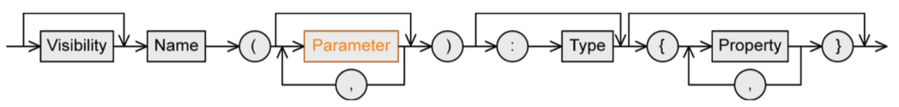
Similar to attributes.
parameter:
-
direction
-
in: input parameter (value is expected) -
out: output parameter (adopts a new value after execution of operation) -
inout: combined input/output
-
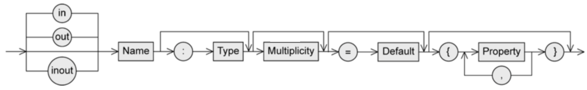
type: type of return value
Class variable and class operation
Class variable (static): defined only once per class, shared by all instances
Class operation (static): can be used without creating an instance
To distinguish class variables/operations, underline them.
Relationships
Binary association
Connects instances of two classes with one another.
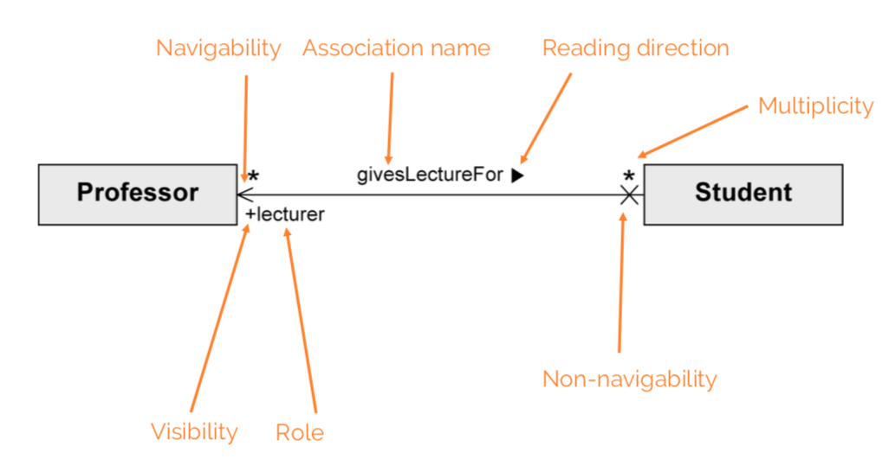
Properties:
- Navigability: an object knows its partner objects, can access their visible attributes and operations (open arrow head, if not then cross). If undefined, bidirectional is assumed.
- Multiplicity: number of objects that can be associated with exactly one object of the opposite side (e.g. one-to-one, one-to-many...)
- Role: how an object is involved in an association relationship
-
xorconstraint: cannot be associated with both at the same time
in Java:
class Professor {...}
class Student {
public Professor[] lecturer;
}
n-ary association
More than two objects involved in the relationship, no navigation directions.
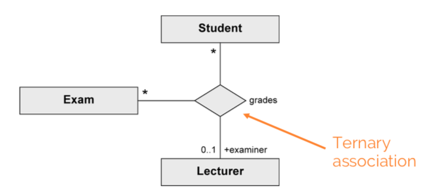
Association class
Assign attributes to relationship between classes instead of to a class.
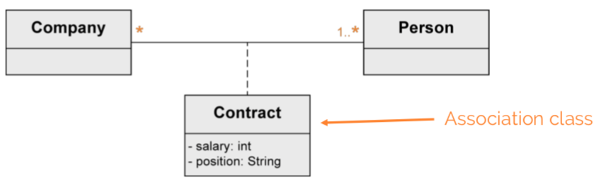
Needed for n:m associations.
Association class vs regular class:
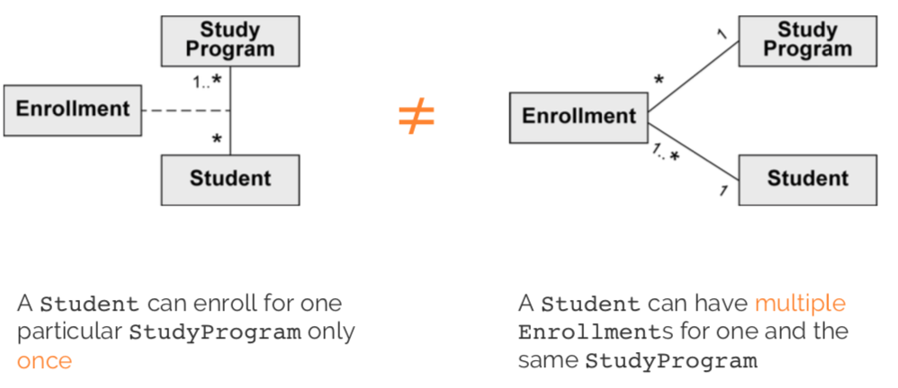
Can be unique or non-unique.
Aggregation
Shows that class is part of another class.
Properties:
- transitive: if B is part of A and C is part of B, C is also part of A
- asymmetric: not possible for A to be part of B and B to be part of A at the same time
expresses weak belonging of the parts to a whole (parts also exist independently of the whole). one element can be part of multiple other elements at the same time.
Example:
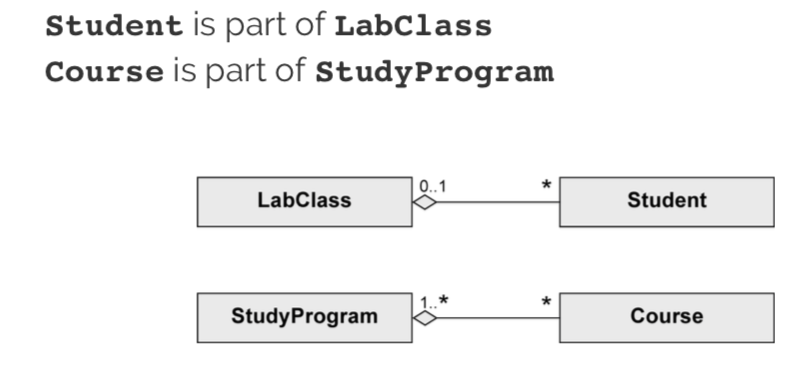
Composition
existence dependency between composite object and its parts. one part can be contained in max one composite object at a point in time. if the composite object is deleted, so are its parts.
A Tire can exist without a Car. A Tire belongs to max one Car:
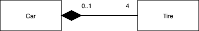
Generalization
stuff from a superclass is passed to its subclass (attributes, operations, associations, aggregations)
every instance of a subclass is simultaneously an indirect instance of the superclass. subclass inherits all characteristics except private ones. generalizations are transitive. a class may have multiple superclasses/subclasses.
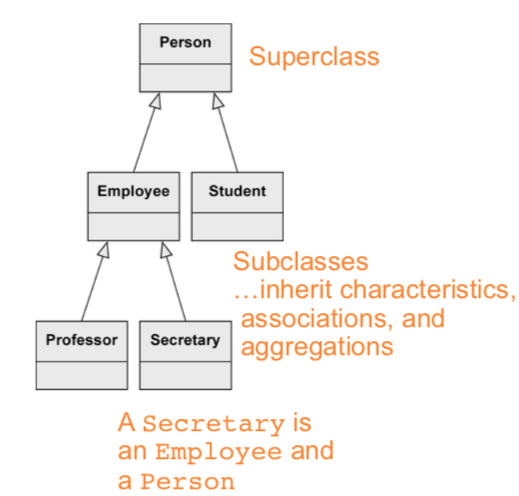
abstract class ensures that there are no direct instances of the superclass.

Creating a class diagram
nouns often indicate classes. adjectives indicate attribute values. verbs indicate operations.
in general, tend towards having deep classes. push complexity as low as possible in the class diagram hierarchy.
focus on:
-
responsibility of each class (private is default,
getterandsettermethods) - knowledge needed by each class (tend toward generality, don't focus on order of tasks)
- usability of operations of each class (exposed APIs should be as easy and intuitive as possible
generalization: "there is difference between research and administrative employees. some research associates hold courses, so they are lecturers."
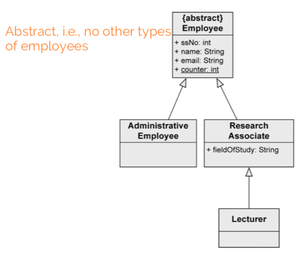
composition: "a university consists of multiple faculties which are composed of various institutes."
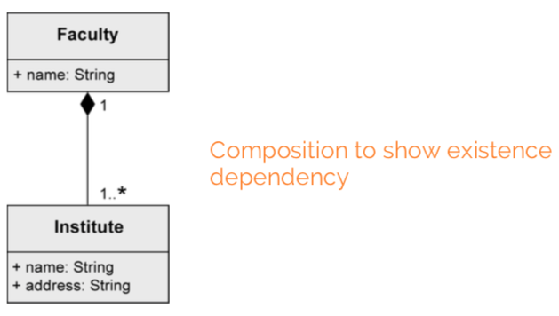
binary association: "each faculty is led by a dean, who is an employee of the university"
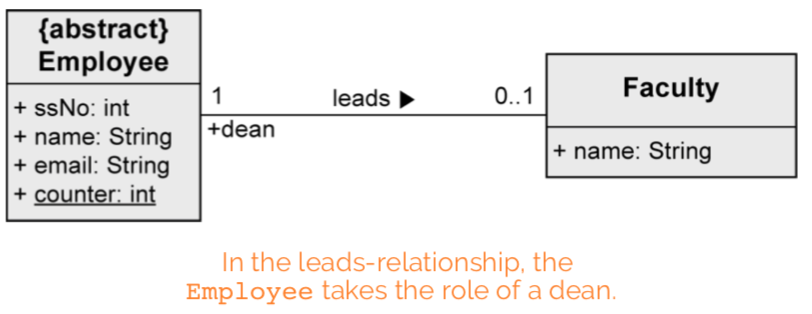
shared aggregation: "research associates are assigned to at least one institute"
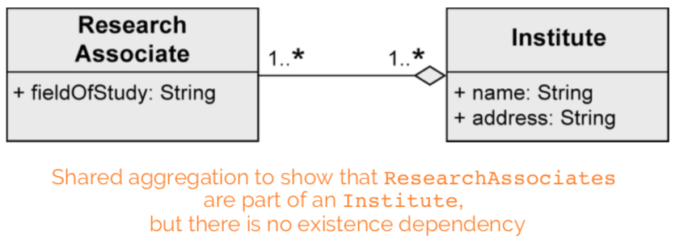
association class: "research associates can be involved in projects for a certain number of hours"
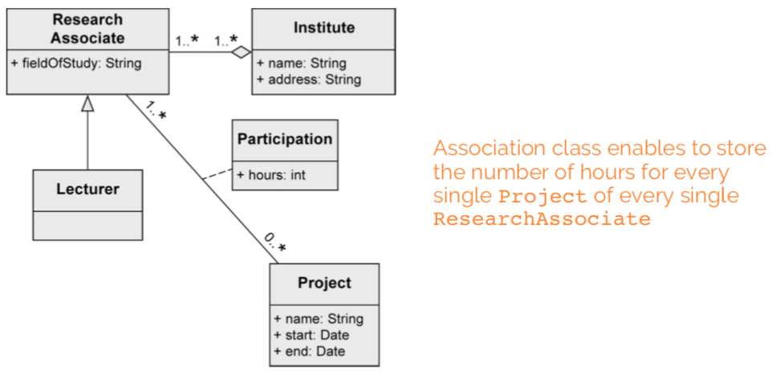
generalization: "some research associates hold courses. then they are called lecturers."
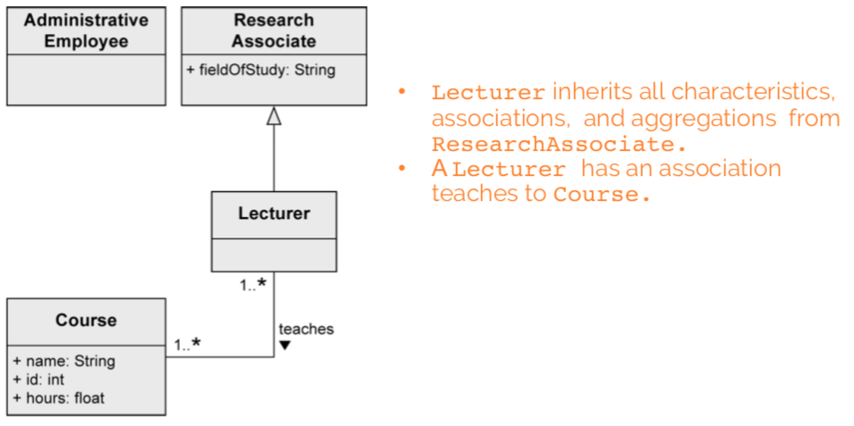